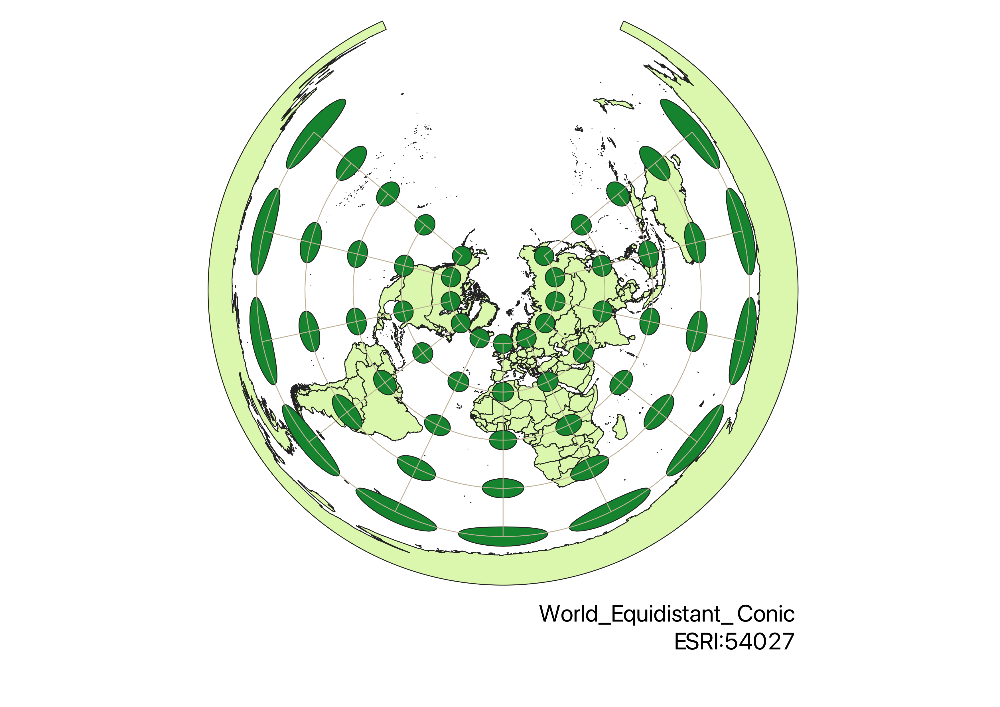
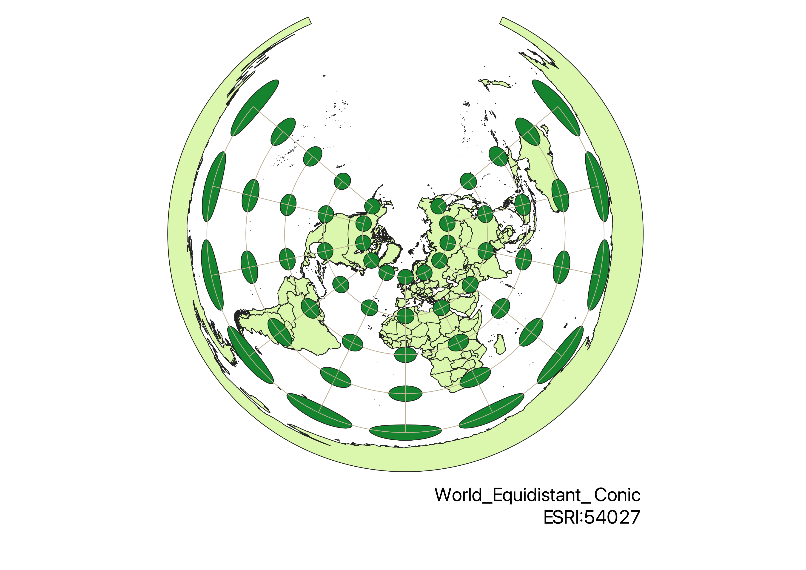
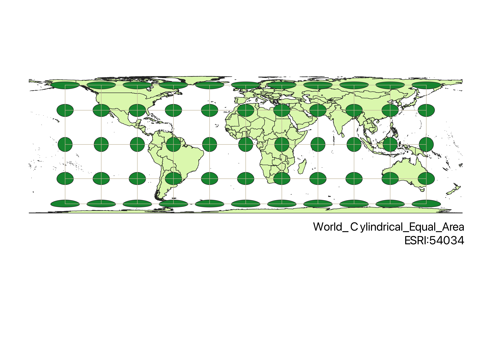
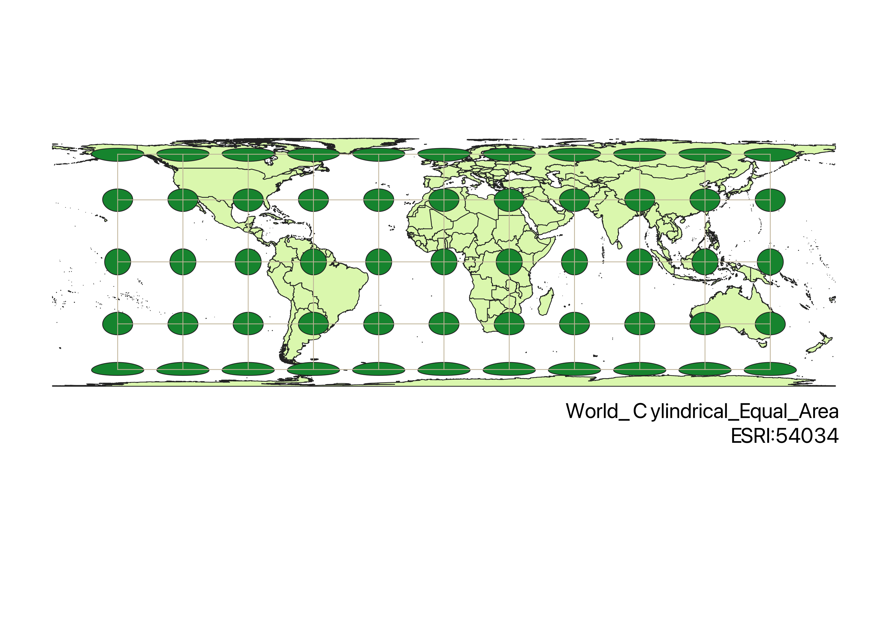

Homework 3


 

 


The first thing I did to make the projections was install the Indicatrix mapper plug-in. Next, I created a vector layer from the world projections folder in Sakai. Specifically, I used ne_10m_admin_0_countries in Shapefile format. Using the default settings, the Indicatrix mapper added longitude and latitude lines and generated circles. After clicking the button in the bottom right corner of the QGIS screen, I changed the projection type after searching for the projection name in the filter bar. Changing the projection altered the lines and circles. The differences in circle shape and size is a reflection of the distortions each type of projection had to make. After each projection, I created a new print layout, added text, and exported the image as a PNG.